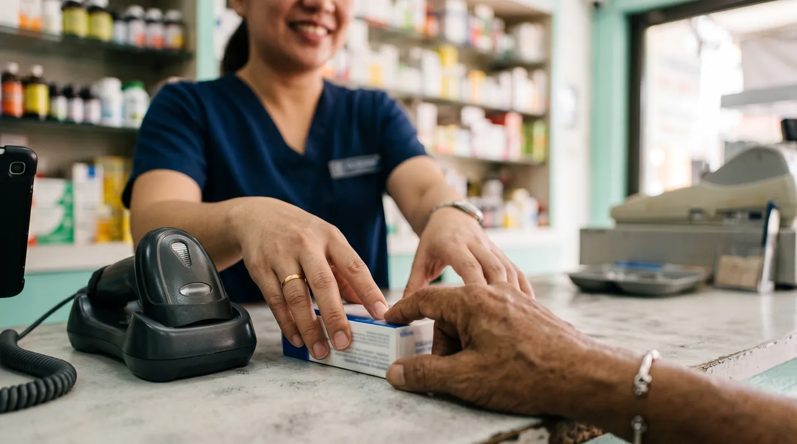

Pharmacy POS in Southeast Asia: the generic-name rule most tills ignore
A customer puts a prescription on your counter. You know the brand, you know you are out of it, and you are fairly sure there is something on the shelf with the same active substance under a different name at a different price. In the Philippines, telling them about it is not a courtesy. It is written into the Generics Act. And here is the awkward part: the till in front of you almost certainly cannot answer the question. This guide walks through what a drugstore in the region actually needs from its software, starting with the one thing the brochures never mention.

What the law actually asks of a drug outlet
Start with the text, because it is more demanding than most owners remember. Section 6 of Republic Act 6675, the Generics Act of 1988, says that drug outlets, "including drugstores, hospital and non-hospital pharmacies and non-traditional outlets such as supermarkets and stores, shall inform any buyer about any and all other drug products having the same generic name, together with their corresponding prices so that the buyer may adequately exercise, his option".
Read that again. Not "may mention". Not "if asked". Any and all other products with the same generic name, with their prices. The same section adds a second duty that is easy to forget: outlets must post, in a conspicuous place in the establishment, a list of drug products carrying the same generic name together with their corresponding prices.
Section 12 puts teeth behind it. For individuals, violations of Section 6 run from a reprimand for a first offence, to a fine of P2,000 to P5,000 for a second, P5,000 to P10,000 plus a 30-day suspension for a third, and P10,000 or more with a one-year suspension after that. Organisations face fines and the possible suspension or revocation of their licence. You can read the full text of RA 6675 yourself, and you should, because enforcement practice and implementing rules move even when the statute does not.
The same logic exists in different forms elsewhere in the region, where generic prescribing and price transparency have been policy priorities for years. The wording differs country by country, so check your own regulator rather than assuming the Philippine rule travels.
Generic name, INN: the only name you can trust
The generic name is not a marketing category. It is the name of the active substance, assigned by the World Health Organization through its International Nonproprietary Names programme. WHO puts it plainly: each INN is a unique name that is globally recognised and is public property.
That last part is what makes it useful behind a counter. Because the name belongs to nobody, it is the same in Manila, Jakarta and Hanoi, on a local box and an imported one. Two products with wildly different packaging and a threefold price gap can carry the same INN. Brand names cannot tell you that. Barcodes cannot tell you that. Only the molecule can.
Why your till can't answer "what else has this molecule?"
General retail software models a product as three things: a name, a barcode and a price. That is enough for a hardware store. A pharmacy needs a fourth and fifth: the active substance, and its strength and form. If those fields do not exist in the catalogue, no search box will ever surface an equivalent, however good the interface looks.
So the question to put to any vendor is narrow and easy to test. On my own stock, not your demo data: can you type a molecule and show me everything I hold under it, with strength, form, quantity on hand and price, side by side? Everything else in the demo can wait until they have answered that.
What good looks like at the counter:
- Search by molecule as easily as by brand. One field, both work.
- Equivalents surfacing on their own when the requested item hits zero, with real quantity on hand.
- Strength and form shown, because 500 mg tablets and 125 mg syrup are not interchangeable answers to one prescription.
- Prices side by side, which is both what the buyer wants and, in the Philippines, what Section 6 asks you to provide.
Batches and expiry: FEFO, not FIFO
Plenty of stock tools do FIFO: first in, first out. For medicines that is not enough. What matters is FEFO, first expired, first out. The difference sounds academic until you destroy a box received eight months ago while an older box with a longer shelf life sits quietly beside it.
FEFO needs the system to think in batches, not just products. Every goods-in records a batch number and an expiry date, every sale proposes the batch closest to expiry first, and alerts arrive early enough that you can still sell the stock rather than write it off.
The practical bottleneck is data entry. Most medicine packs now carry a two-dimensional Data Matrix code holding the product identifier, the batch number and the expiry date together. Software that reads all three in one scan spares your staff the manual batch entry that everybody quietly skips once a queue forms. And a batch entered wrongly makes FEFO worthless.
Stock that only knows quantities tells you what is left. Stock that knows batches tells you what you are about to lose, and when.
The product catalogue question
Ask early where the product database comes from. If you have to create every reference yourself, with its molecule, strength and form, you will not do it. Nobody does. Three weeks in, the catalogue is half empty, molecule search returns nothing, and everyone goes back to walking the shelves from memory.
Software that ships with a medicine catalogue already built on public drug databases starts out knowing the molecules. That is the difference between a feature you use on day one and a feature you plan to configure some day. Ask each vendor which databases their catalogue is built on, how many references it holds, and how often it is refreshed.
The rest of the counter: patients, staff, blackouts
A community drugstore runs on relationships. Patient records keep the dispensing history that makes refills quick and awkward questions unnecessary. Customer credit lets you record a sale as owed rather than keeping a separate notebook, which matters in neighbourhoods where people settle up on payday.
Staff controls matter for a different reason. Individual PIN access rather than one shared login tells you who did what, and a cap on the discount an assistant can give without approval prevents the slow leak that nobody notices until the margin review. We cover that pattern in detail in our guide to customer tabs and staff discount limits.
Then there is power and connectivity. In much of the region a brownout is a scheduling matter, not a surprise. Most cloud tills keep selling offline, which is table stakes. The real question is what else survives: can you still look up stock, search a molecule, see batches and dates? Test it before you buy. Turn off mobile data and Wi-Fi, then try a sale, a name search, a molecule search, a stock lookup and a receipt print. Whatever fails in that five-minute test will fail on the day it counts.
Where the tax side fits
Registering a till with the Bureau of Internal Revenue is a separate exercise from choosing your software, and the requirements have changed more than once in recent years. Do not let a vendor blur the two. What your software owes you is a clean, exportable sales base and the invoice and report formats the tax office expects. The compliance step itself is yours, and the only reliable answer comes from the BIR. We walk through the current landscape in our guide to a BIR-accredited POS in the Philippines.
Two more licences sit behind the counter and have nothing to do with software, but they gate everything else: the FDA licence to operate for the outlet, and a pharmacist licensed by the Professional Regulation Commission. Without the second, the first is academic.
The options on the table
Broadly you are choosing between three families: purpose-built pharmacy software, a general cloud POS, and something that tries to cover both. Here is how we rank them for a community drugstore, with the caveat that features and prices move and every claim below deserves a live demo on your own stock.
digabloPos
It answers the Section 6 problem directly. Its barcode scan identifies the molecule (INN/DCI) alongside the batch number and expiry date, which feeds FEFO stock release and automatic expiry alerts. When a reference runs out, equivalents by molecule are surfaced. The vendor states a catalogue of roughly 370,000 references built from public drug databases, so you are not starting from an empty product list. Add patient records, customer credit, per-employee permissions with a discount cap, and a fully offline mode with no feature switched off that syncs when the connection returns. The base plan is free and imposes no payment commission and no payment processor, so you keep your choice of how to get paid. Pricing tiers change, so check the current offer with the vendor.
👍 Strengths
- Molecule search and equivalents, which general POS software does not model
- One scan captures product, batch and expiry
- FEFO release with automatic expiry alerts
- Medicine catalogue supplied rather than built by you
- Patient records and customer credit included
- Full offline mode, stock lookup included
👎 Check for yourself
- Still a young brand in the region, judge it in a live demo
- Modules beyond the core till are paid
- No local fiscal accreditation is claimed outside France, confirm BIR requirements yourself
Dedicated pharmacy software
A number of vendors in the region sell software written for drugstores rather than adapted from retail, and several advertise BIR processing assistance as part of onboarding, which is genuinely useful if paperwork is not your strong suit. Their public material typically covers batch and expiry tracking, prescription handling and pharmacy-shaped reporting.
What to make them demonstrate rather than assume: molecule search with equivalents and prices on screen, the size and source of the catalogue they supply, exactly what remains usable when the connection drops, and the full cost once hardware, per-branch fees and modules are added.
👍 Strengths
- Built for pharmacy workflow, not retrofitted
- Local support, and often help with tax paperwork
👎 Check for yourself
- Molecule search and supplied catalogue vary a lot, demand a demo
- Total cost with hardware and per-device fees needs pinning down
A general cloud POS (Loyverse and similar)
General cloud tills sell well, handle staff and products cleanly, and often cost nothing on a base plan. For the front-of-shop lines, vitamins, personal care, baby goods, that is a perfectly reasonable choice. For the medicine side the gap is not quality, it is vocabulary: active substance, batch with expiry date and patient history are not concepts these products are built around, because they are made for general retail. You can still use one, as long as you accept that batches and equivalents will live in a spreadsheet beside the till.
👍 Strengths
- Free to start, quick to learn
- Fine for non-medicine lines
👎 Limits
- Not modelled around molecules, batches or expiry dates
- Section 6 price comparison stays a manual job
Test it on three boxes from your own shelf
The base plan is free. Scan three packs and see whether the batch, the expiry date and the molecule come back correctly.
Try digabloPos freeAt a glance
| What a drugstore needs | digabloPos | Pharmacy software | General POS |
|---|---|---|---|
| Search by molecule (INN) | Yes | Ask for a demo | Not modelled |
| Equivalents shown when out of stock | Yes | Ask for a demo | Not modelled |
| Batch and expiry in one scan | Yes | Often | Not modelled |
| FEFO release and expiry alerts | Yes | Often | Rarely |
| Medicine catalogue supplied | Yes | Varies | No |
| Stock visible offline | Yes | Varies | Varies |
Compiled from public vendor documentation reviewed in August 2026 and features confirmed by the vendors. "Ask for a demo" does not mean absent: it means we could not confirm it publicly and you should have it shown to you. Verify on your own catalogue before committing.
Frequently asked questions
Does Philippine law really require me to mention cheaper generics?
Under Section 6 of Republic Act 6675, the Generics Act of 1988, drug outlets including drugstores and non-traditional outlets such as supermarkets shall inform any buyer about any and all other drug products having the same generic name, together with their corresponding prices, so the buyer can exercise the option. The same section also requires outlets to post a list of drug products with the same generic name and their prices in a conspicuous place. Read the text yourself and confirm the current implementing rules with the FDA and your professional board.
What is a generic name or INN, exactly?
It is the name of the active substance itself, assigned by the World Health Organization through its International Nonproprietary Names programme. WHO describes each INN as a unique name that is globally recognised and is public property. Paracetamol is an INN. The brand names it is sold under are not. Because the INN belongs to no one, it is the only name that reliably tells you two different boxes hold the same molecule.
What are the penalties under the Generics Act?
Section 12 sets a graduated scale for violations of Section 6 by individuals: a reprimand for the first offence, a fine of P2,000 to P5,000 for the second, P5,000 to P10,000 plus a 30-day suspension for the third, and P10,000 or more with a one-year suspension for the fourth and later offences. Organisations face fines and possible suspension or revocation of licence. Amounts and enforcement practice change, so verify the current position before relying on these figures.
Why can't my current POS search by molecule?
Because most POS systems are built for general retail, where a product is a name, a barcode and a price. A pharmacy needs a third layer: the active substance, its strength and its form. If that layer is not in the product catalogue, no amount of clever searching will surface an equivalent. Ask any vendor to show you a search by molecule on your own stock, not on their demo data.
Is FIFO good enough for medicines?
No. FIFO releases what arrived first. FEFO releases what expires first, which is not the same thing, because a box received this month can easily expire before one received last year. FEFO only works if the system stores an expiry date per batch rather than a single quantity per product.
Do I still need BIR registration for my POS?
Machine registration and the documents required have changed several times in recent years, and the rules differ for a standalone till, a cloud POS and a computerised accounting system. Treat it as a separate exercise from choosing your software, confirm the current requirement directly with the BIR, and make sure whatever you buy can produce the reports and invoice formats they ask for.
Stop losing the sale to an out-of-stock brand
Seeing everything you hold under the same molecule, with batch and expiry, changes how a counter runs.
Set up a free tillOfficial sources
This is regulated ground, so check it yourself rather than taking our word for it.
- Republic Act No. 6675, the Generics Act of 1988: full statutory text, including the Section 6 duties of drug outlets and the Section 12 penalties.
- World Health Organization, International Nonproprietary Names programme: what an INN is, who assigns it and why it is public property.
- Professional Regulation Commission: licensing of pharmacists in the Philippines.